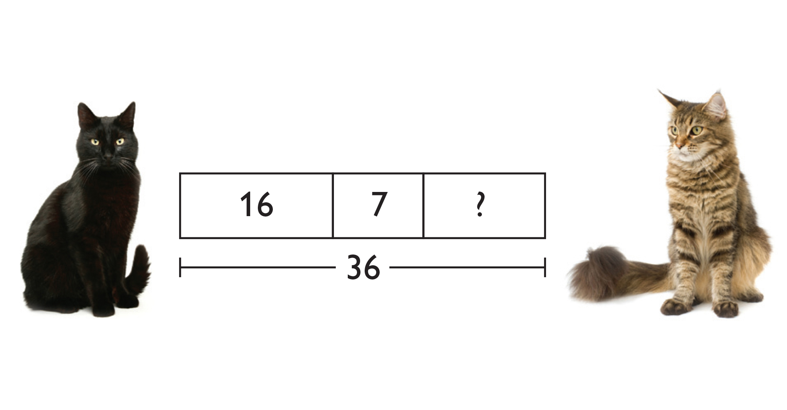

Allow students who have a clear understanding of the content thus far in the unit to work on Gallery problems of their choosing. You can then use this time to provide additional help to students who need review of the unit's concepts or to assist students who may have fallen behind on work.
Students explore ways to represent math problems—make a Number Line, a Tape Diagram, and color a Hundred Chart. Then they solve a problem about the number of cats playing in a barn.
Students learn about comparing numbers greater than 100.
Students explore the features of the Notebook drawing area. They will draw, make diagrams, write text, and add pictures and videos.
Answers will vary. This is a possible math drawing.
 Answer to the problem:
16 + 7 = 23
23 + ? = 36
36 – 23 = 13
13 cats joined the black cats and striped cats in the barn.
781 is greater than 698. Explanations will vary.
Answers will vary. Possible math drawing: